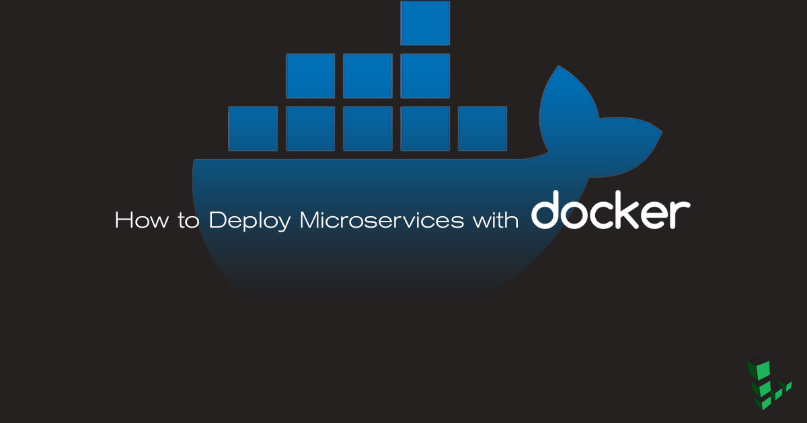

How to Deploy Microservices with Docker
Updated by Bob Strecansky Contributed by Bob Strecansky

What is a Microservice?
Microservices are an increasingly popular architecture for building large-scale applications. Rather than using a single, monolithic codebase, applications are broken down into a collection of smaller components called microservices. This approach offers several benefits, including the ability to scale individual microservices, keep the codebase easier to understand and test, and enable the use of different programming languages, databases, and other tools for each microservice.
Docker is an excellent tool for managing and deploying microservices. Each microservice can be further broken down into processes running in separate Docker containers, which can be specified with Dockerfiles and Docker Compose configuration files. Combined with a provisioning tool such as Kubernetes, each microservice can then be easily deployed, scaled, and collaborated on by a developer team. Specifying an environment in this way also makes it easy to link microservices together to form a larger application.
This guide shows how to build and deploy an example microservice using Docker and Docker Compose.
Before You Begin
You will need a Linode with Docker and Docker Compose installed to complete this guide.
Install Docker
These steps install Docker Community Edition (CE) using the official Ubuntu repositories. To install on another distribution, see the official installation page.
Remove any older installations of Docker that may be on your system:
sudo apt remove docker docker-engine docker.ioMake sure you have the necessary packages to allow the use of Docker’s repository:
sudo apt install apt-transport-https ca-certificates curl software-properties-commonAdd Docker’s GPG key:
curl -fsSL https://download.docker.com/linux/ubuntu/gpg | sudo apt-key add -Verify the fingerprint of the GPG key:
sudo apt-key fingerprint 0EBFCD88You should see output similar to the following:
pub 4096R/0EBFCD88 2017-02-22 Key fingerprint = 9DC8 5822 9FC7 DD38 854A E2D8 8D81 803C 0EBF CD88 uid Docker Release (CE deb)Add the
stableDocker repository:sudo add-apt-repository "deb [arch=amd64] https://download.docker.com/linux/ubuntu $(lsb_release -cs) stable"Update your package index and install Docker CE:
sudo apt update sudo apt install docker-ceAdd your limited Linux user account to the
dockergroup:sudo usermod -aG docker $USERNote
After entering theusermodcommand, you will need to close your SSH session and open a new one for this change to take effect.Check that the installation was successful by running the built-in “Hello World” program:
docker run hello-world
Install Docker Compose
Download the latest version of Docker Compose. Check the releases page and replace
1.21.2in the command below with the version tagged as Latest release:sudo curl -L https://github.com/docker/compose/releases/download/1.21.2/docker-compose-`uname -s`-`uname -m` -o /usr/local/bin/docker-composeSet file permissions:
sudo chmod +x /usr/local/bin/docker-compose
Prepare the Environment
This section uses Dockerfiles to configure Docker images. For more information about Dockerfile syntax and best practices, see our How To Use Dockerfiles guide and Docker’s Dockerfile Best Practices guide.
Create a directory for the microservice:
mkdir flask-microserviceCreate the directory structure for the microservice components within the new directory:
cd flask-microservice mkdir nginx postgres web
NGINX
Within the new
nginxsubdirectory, create a Dockerfile for the NGINX image:- nginx/Dockerfile
-
1 2from nginx:alpine COPY nginx.conf /etc/nginx/nginx.conf
Create the
nginx.confreferenced in the Dockerfile:- /nginx/nginx.conf
-
1 2 3 4 5 6 7 8 9 10 11 12 13 14 15 16 17 18 19 20 21 22 23 24 25 26 27 28 29 30 31 32 33 34 35 36 37 38 39 40user nginx; worker_processes 1; error_log /dev/stdout info; error_log off; pid /var/run/nginx.pid; events { worker_connections 1024; use epoll; multi_accept on; } http { include /etc/nginx/mime.types; default_type application/octet-stream; log_format main '$remote_addr - $remote_user [$time_local] "$request" ' '$status $body_bytes_sent "$http_referer" ' '"$http_user_agent" "$http_x_forwarded_for"'; access_log /dev/stdout main; access_log off; keepalive_timeout 65; keepalive_requests 100000; tcp_nopush on; tcp_nodelay on; server { listen 80; proxy_pass_header Server; location / { proxy_set_header Host $host; proxy_set_header X-Real-IP $remote_addr; # app comes from /etc/hosts, Docker added it for us! proxy_pass http://flaskapp:8000/; } } }
PostgreSQL
The PostgreSQL image for this microservice will use the official postgresql image on Docker Hub, so no Dockerfile is necessary.
In the postgres subdirectory, create an init.sql file:
- postgres/init.sql
-
1 2 3 4 5 6 7 8 9 10 11 12 13 14 15 16 17 18 19 20 21 22 23SET statement_timeout = 0; SET lock_timeout = 0; SET idle_in_transaction_session_timeout = 0; SET client_encoding = 'UTF8'; SET standard_conforming_strings = on; SET check_function_bodies = false; SET client_min_messages = warning; SET row_security = off; CREATE EXTENSION IF NOT EXISTS plpgsql WITH SCHEMA pg_catalog; COMMENT ON EXTENSION plpgsql IS 'PL/pgSQL procedural language'; SET search_path = public, pg_catalog; SET default_tablespace = ''; SET default_with_oids = false; CREATE TABLE visitors ( site_id integer, site_name text, visitor_count integer ); ALTER TABLE visitors OWNER TO postgres; COPY visitors (site_id, site_name, visitor_count) FROM stdin; 1 linodeexample.com 0 \.
CautionIn Line 22 ofinit.sql, make sure your text editor does not convert tabs to spaces. The app will not work without tabs between the entries in this line.
Web
The web image will hold an example Flask app. Add the following files to the web directory to prepare the app:
Create a
.python-versionfile to specify the use of Python 3.6:echo "3.6.0" >> web/.python-versionCreate a Dockerfile for the
webimage:- web/Dockerfile
-
1 2 3 4 5 6 7 8 9 10from python:3.6.2-slim RUN groupadd flaskgroup && useradd -m -g flaskgroup -s /bin/bash flask RUN echo "flask ALL=(ALL) NOPASSWD:ALL" >> /etc/sudoers RUN mkdir -p /home/flask/app/web WORKDIR /home/flask/app/web COPY requirements.txt /home/flask/app/web RUN pip install --no-cache-dir -r requirements.txt RUN chown -R flask:flaskgroup /home/flask USER flask ENTRYPOINT ["/usr/local/bin/gunicorn", "--bind", ":8000", "linode:app", "--reload", "--workers", "16"]
Create
web/linode.pyand add the example app script:- web/linode.py
-
1 2 3 4 5 6 7 8 9 10 11 12 13 14 15 16 17 18 19 20 21 22 23 24 25 26 27 28 29 30 31 32 33 34 35 36 37 38 39 40 41 42 43 44 45 46 47 48 49 50 51 52 53 54 55 56 57from flask import Flask import logging import psycopg2 import redis import sys app = Flask(__name__) cache = redis.StrictRedis(host='redis', port=6379) # Configure Logging app.logger.addHandler(logging.StreamHandler(sys.stdout)) app.logger.setLevel(logging.DEBUG) def PgFetch(query, method): # Connect to an existing database conn = psycopg2.connect("host='postgres' dbname='linode' user='postgres' password='linode123'") # Open a cursor to perform database operations cur = conn.cursor() # Query the database and obtain data as Python objects dbquery = cur.execute(query) if method == 'GET': result = cur.fetchone() else: result = "" # Make the changes to the database persistent conn.commit() # Close communication with the database cur.close() conn.close() return result @app.route('/') def hello_world(): if cache.exists('visitor_count'): cache.incr('visitor_count') count = (cache.get('visitor_count')).decode('utf-8') update = PgFetch("UPDATE visitors set visitor_count = " + count + " where site_id = 1;", "POST") else: cache_refresh = PgFetch("SELECT visitor_count FROM visitors where site_id = 1;", "GET") count = int(cache_refresh[0]) cache.set('visitor_count', count) cache.incr('visitor_count') count = (cache.get('visitor_count')).decode('utf-8') return 'Hello Linode! This page has been viewed %s time(s).' % count @app.route('/resetcounter') def resetcounter(): cache.delete('visitor_count') PgFetch("UPDATE visitors set visitor_count = 0 where site_id = 1;", "POST") app.logger.debug("reset visitor count") return "Successfully deleted redis and postgres counters"
Add a
requirements.txtfile with the required Python dependencies:- web/requirements.txt
-
1 2 3 4flask gunicorn psycopg2 redis
Docker Compose
Docker Compose will be used to be define the connections between containers and their configuration settings.
Create a docker-compose.yml file in the flask-microservice directory and add the following:
- docker-compose.yml
-
1 2 3 4 5 6 7 8 9 10 11 12 13 14 15 16 17 18 19 20 21 22 23 24 25 26 27 28 29 30 31 32 33 34 35 36 37 38 39 40 41 42 43 44 45 46 47 48 49 50 51 52 53 54 55 56 57 58 59 60 61 62 63 64 65 66 67 68 69 70 71 72 73 74 75 76 77 78 79 80 81 82 83 84 85version: '3' services: # Define the Flask web application flaskapp: # Build the Dockerfile that is in the web directory build: ./web # Always restart the container regardless of the exit status; try and restart the container indefinitely restart: always # Expose port 8000 to other containers (not to the host of the machine) expose: - "8000" # Mount the web directory within the container at /home/flask/app/web volumes: - ./web:/home/flask/app/web # Don't create this container until the redis and postgres containers (below) have been created depends_on: - redis - postgres # Link the redis and postgres containers together so that they can talk to one another links: - redis - postgres # Pass environment variables to the flask container (this debug level lets you see more useful information) environment: FLASK_DEBUG: 1 # Deploy with 3 replicas in the case of failure of one of the containers (only in Docker Swarm) deploy: mode: replicated replicas: 3 # Define the redis Docker container redis: # use the redis:alpine image: https://hub.docker.com/_/redis/ image: redis:alpine restart: always deploy: mode: replicated replicas: 3 # Define the redis NGINX forward proxy container nginx: # build the nginx Dockerfile: http://bit.ly/2kuYaIv build: nginx/ restart: always # Expose port 80 to the host machine ports: - "80:80" deploy: mode: replicated replicas: 3 # The Flask application needs to be available for NGINX to make successful proxy requests depends_on: - flaskapp # Define the postgres database postgres: restart: always # Use the postgres alpine image: https://hub.docker.com/_/postgres/ image: postgres:alpine # Mount an initialization script and the persistent postgresql data volume volumes: - ./postgres/init.sql:/docker-entrypoint-initdb.d/init.sql - ./postgres/data:/var/lib/postgresql/data # Pass postgres environment variables environment: POSTGRES_PASSWORD: linode123 POSTGRES_DB: linode # Expose port 5432 to other Docker containers expose: - "5432"
Test the Microservice
Use Docker Compose to build all of the images and start the microservice:
cd flask-microservice/ && docker-compose upYou should see all of the services start in your terminal.
Open a new terminal window and make a request to the example application:
curl localhostHello Linode! This page has been viewed 1 time(s).Reset the page hit counter:
curl localhost/resetcounterSuccessfully deleted redis and postgres countersReturn to the terminal window where Docker Compose was started to view the standard out log:
flaskapp_1 | DEBUG in linode [/home/flask/app/web/linode.py:56]: flaskapp_1 | reset visitor count
Using Containers in Production: Best Practices
The containers used in the example microservice are intended to demonstrate the following best practices for using containers in production:
Containers should be:
Ephemeral: It should be easy to stop, destroy, rebuild, and redeploy containers with minimal setup and configuration.
The Flask microservice is an ideal example of this. The entire microservice can be brought up or down using Docker Compose. No additional configuration is necessary after the containers are running, which makes it easy to modify the application.
Disposable: Ideally, any single container within a larger application should be able to fail without impacting the performance of the application. Using a
restart: on-failureoption in thedocker-compose.ymlfile, as well as having a replica count, makes it possible for some containers in the example microservice to fail gracefully while still serving the web application with no degradation to the end user.Note
The replica count directive will only be effective when this configuration is deployed as part of a Docker Swarm, which is not covered in this guide.Quick to start: Avoiding additional installation steps in the Docker file, removing dependencies that aren’t needed, and building a target image that can be reused are three of the most important steps in making a web application that has a quick initialization time within Docker. The example application uses short, concise, prebuilt Dockerfiles in order to minimize initialization time.
Quick to stop: Validate that a
docker kill --signal=SIGINT {APPNAME}stops the application gracefully. This, along with a restart condition and a replica condition, will ensure that when containers fail, they will be brought back online efficiently.Lightweight: Use the smallest base container that provides all of the utilities that are needed to build and run your application. Many Docker images are based on Alpine Linux, a light and simple Linux distribution that takes up only 5MB in a Docker image. Using a small distro saves network and operational overhead and greatly increases container performance. The example application uses alpine images where applicable (NGINX, Redis, and PostgreSQL), and uses a python-slim base image for the Gunicorn / Flask application.
Stateless: Since they are ephemeral, containers typically shouldn’t maintain state. An application’s state should be stored in a separate, persistent data volume, as is the case with the microservice’s PostgreSQL data store. The Redis key-value store does maintain data within a container, but this data is not application-critical; the Redis store will fail back gracefully to the database should the container not be able to respond.
Portable: All of an app’s dependencies that are needed for the container runtime should be locally available. All of the example microservice’s dependencies and startup scripts are stored in the directory for each component. These can be checked into version control, making it easy to share and deploy the application.
Modular: Each container should have one responsibility and one process. In this microservice, each of the major processes (NGINX, Python, Redis, and PostgreSQL) is deployed in a separate container.
Logging: All containers should log to
STDOUT. This uniformity makes it easy to view the logs for all of the processes in a single stream.Resilient: The example application restarts its containers if they are exited for any reason. This helps give your Dockerized application high availability and performance, even during maintenance periods.
More Information
You may wish to consult the following resources for additional information on this topic. While these are provided in the hope that they will be useful, please note that we cannot vouch for the accuracy or timeliness of externally hosted materials.
Join our Community
Find answers, ask questions, and help others.
This guide is published under a CC BY-ND 4.0 license.